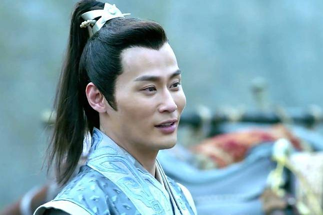
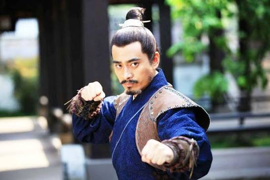
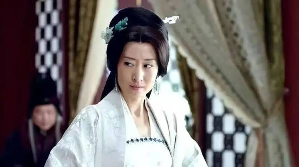
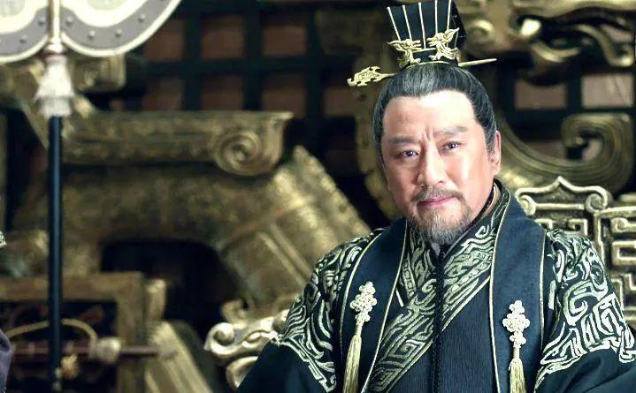
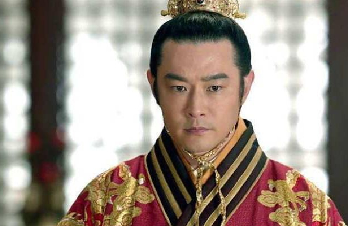
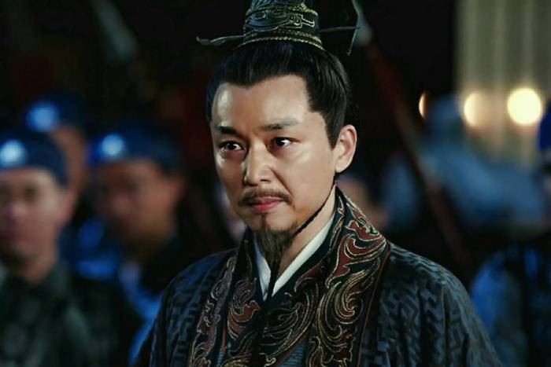

梅長蘇
江左梅郎江左盟宗主，以蘇哲之名隨友人來到金陵休養。身體孱弱，卻以學識與從容氣度令人印象深刻。
閱讀完整介紹小說出處
第一章〈初臨帝京〉
C001-P0012、C001-P0013、C001-P0049、C001-P0050、C001-P0051
第二章〈小顯崢嶸〉
C002-P0082、C002-P0083、C002-P0084
從一個名字開始，
認識各自的來處。
江左盟宗主，以蘇哲之名隨友人來到金陵休養。身體孱弱，卻以學識與從容氣度令人印象深刻。
閱讀完整介紹第一章〈初臨帝京〉
C001-P0012、C001-P0013、C001-P0049、C001-P0050、C001-P0051
第二章〈小顯崢嶸〉
C002-P0082、C002-P0083、C002-P0084
 本期人物
本期人物大梁皇七子，常年在外領兵。初登場時身形挺拔、帶有剛毅之氣，有著與城中其他皇子不同的軍旅背景。
閱讀完整介紹第四章〈麒麟之才〉
C004-P0175、C004-P0237
雲南穆氏之女，代幼弟鎮守南境，統率十萬邊防鐵騎。她以出色戰功聞名，是朝廷倚重的南境女帥。
人物簡介第一章〈初臨帝京〉
C001-P0100

兼具謝家與卓家公子身分，與言豫津交好。故事開場時，邀請梅長蘇同行入京休養。
人物簡介第一章〈初臨帝京〉
C001-P0037、C001-P0038、C001-P0039、C001-P0049、C001-P0067
蕭景睿的好友，個性灑脫、喜愛熱鬧。遊歷途中，也曾主動護送受迫害的百姓進京申冤。
人物簡介第一章〈初臨帝京〉
C001-P0067、C001-P0068、C001-P0075

掌管京畿九門與五萬禁軍的大統領，位列一品將軍。武功高強，肩負守衛京城的職責。
人物簡介第二章〈小顯崢嶸〉
C002-P0064
跟隨梅長蘇的少年護衛，武功與身法出眾，外表冷峻孤清。與梅長蘇相處時十分親近，受到他的照顧。
人物簡介第一章〈初臨帝京〉
C001-P0058、C001-P0059、C001-P0060、C001-P0061

靖王的生母，入宮前是醫女，熟悉藥療。她在宮中平日少言、行事低調，與靖王有著明確的母子關係。
人物簡介第三十一章〈大楚來客〉
C031-P0005、C031-P0014

大梁當今天子，掌握朝廷決策與宮中大事。故事開場時，他為霓凰郡主的婚事安排公開比試。
人物簡介第一章〈初臨帝京〉
C001-P0035、C001-P0036、C001-P0037、C001-P0038、C001-P0083

大梁當朝太子，名蕭景宣。身處金陵皇室權力中心，與譽王同樣留意入京的江左名士梅長蘇。
人物簡介第四章〈麒麟之才〉
C004-P0031、C004-P0034
第三章〈好逑之爭〉
C003-P0110、C003-P0125

大梁皇子，受封譽王。曾奉旨照管御書房讀書的世家子弟，對梅長蘇的到來也十分關注。
人物簡介第四章〈麒麟之才〉
C004-P0031、C004-P0034
第三章〈好逑之爭〉
C003-P0110、C003-P0125

大梁寧國侯，受皇帝倚重，被稱為朝廷柱石。身為侯府主人，在梅長蘇入京時接待這位遠來的客人。
人物簡介第一章〈初臨帝京〉
C001-P0044、C001-P0045、C001-P0050、C001-P0051
本期收錄梅長蘇、靖王・蕭景琰的完整介紹；其餘人物先以初登場資訊相識。